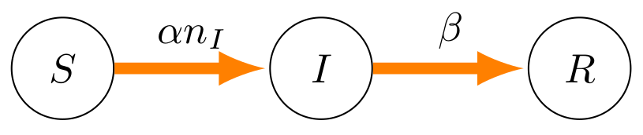
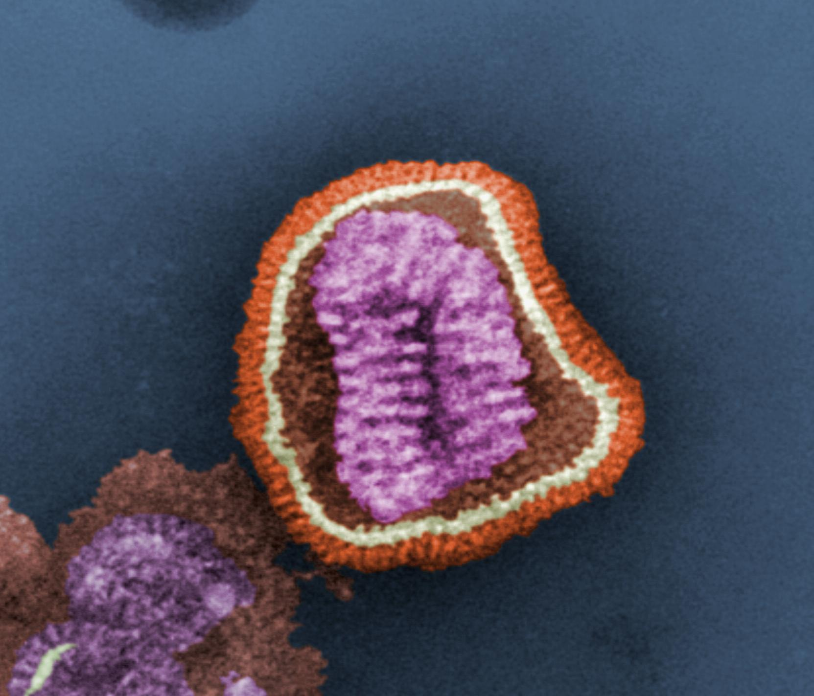

SIR Simulation
SIR Curves
Interventions
Parameters
SIR model — state transitions with rates β and γ

SIR simulation — S, I, R curves over time

Influenza virus particle — electron microscopy
Epidemiology Parameters
β (0–0.5)
0.15
γ (0.005–0.1)
0.020
Your Parameters
Historical R₀ Values
Measles
R₀ ≈ 12–18
Whooping cough
R₀ ≈ 12–17
Chickenpox
R₀ ≈ 10–12
Mumps
R₀ ≈ 4–7
COVID-19 (Delta)
R₀ ≈ 5–6
COVID-19 (original)
R₀ ≈ 2–3
Seasonal flu
R₀ ≈ 1.3
Ebola
R₀ ≈ 1.5–2.5
SARS (2003)
R₀ ≈ 2–5
Key Formulas
R₀ = β / γ
— Basic reproduction number (avg new infections per infected person)
Herd immunity threshold = 1 − 1/R₀
— Fraction of population that must be immune to stop spread
Peak infection time ≈ ln(N·β/γ) / (β−γ)